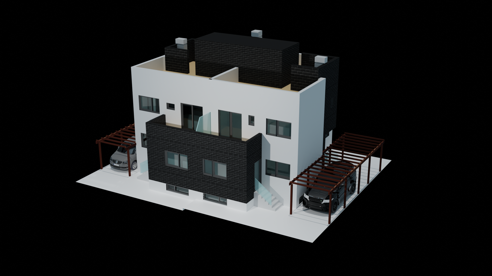
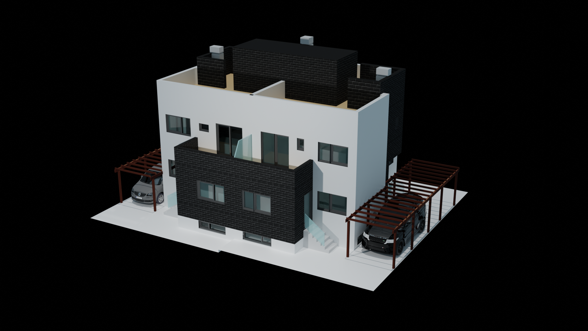

¿Qué es la ilustración científica?
La ilustración científica es una especialidad que combina las habilidades artísticas con un conocimiento profundo de la ciencia para representar conceptos, procesos o estructuras complejas de forma visual, clara y precisa.
¿Qué tipo de temas cubres en tus ilustraciones?
Mis ilustraciones abarcan una variedad de temas, desde biología, anatomía y medicina hasta física y astronomía, adaptándose a las necesidades de cada proyecto.
¿Utilizas técnicas tradicionales o digitales?
Aunque me formé en técnicas tradicionales como la acuarela y el lápiz, en la actualidad utilizo herramientas digitales para la mayoría de mis proyectos debido a su versatilidad y precisión.
¿Ofreces correcciones o revisiones en tus ilustraciones?
Sí, todos mis proyectos incluyen un número determinado de rondas de revisiones para asegurar que la ilustración cumpla con las expectativas y necesidades del cliente.
¿Cuánto tiempo suele tardar la creación de una ilustración?
El tiempo varía según la complejidad del proyecto y los detalles requeridos. Una vez discutidos los detalles, puedo proporcionar un estimado más preciso.
¿Cómo es el proceso desde una idea al final?
Cada ilustracion conlleva un estudio exaustivo previo, a fin de comprender su naturaleza al máximo. Esto hace que el trabajo final sea muy próximo a la realidad, mostrando la verdad sobre lo representado, y dejando de lado la subjetividad.
Acabado este primer paso, comienzo a realizar bocetos, escojo la técnica más adecuada y, ¡a por el final!
¿Qué diferencia a una ilustración científica de una que no lo es?
Esa búsqueda de la objetividad, el intento de mostrar la realidad lo más fielmente posible.
 Me llamo Laura y soy estudiante de Ilustración Científica, además de oceanógrafa e instructora de buceo. Mi trabajo consiste en estudiar ese gran desconocido que es el mar, y acercarlo a la gente a través del dibujo. Vivimos una realidad en la que es necesario actuar ya para recuperar y mantener nuestros océanos sanos y, como dice la frase anterior, es necesario que conozcamos y seamos conscientes de qué es eso que debemos cuidar. La oceanografía, junto con haber pasado tantas horas sumergida, me han dado un entendimiento profundo del funcionamiento del medio marino, lo que, sumado a mi pasión por el dibujo, me permite crear ilustraciones detalladas y precisas.Así que, si quieres ayudarme a dar a conocer mi medio, tienes un proyecto propio o, simplemente te fascinan las criaturas marinas como a mi, ¡no dudes en ponerte en contacto!
Me llamo Laura y soy estudiante de Ilustración Científica, además de oceanógrafa e instructora de buceo. Mi trabajo consiste en estudiar ese gran desconocido que es el mar, y acercarlo a la gente a través del dibujo. Vivimos una realidad en la que es necesario actuar ya para recuperar y mantener nuestros océanos sanos y, como dice la frase anterior, es necesario que conozcamos y seamos conscientes de qué es eso que debemos cuidar. La oceanografía, junto con haber pasado tantas horas sumergida, me han dado un entendimiento profundo del funcionamiento del medio marino, lo que, sumado a mi pasión por el dibujo, me permite crear ilustraciones detalladas y precisas.Así que, si quieres ayudarme a dar a conocer mi medio, tienes un proyecto propio o, simplemente te fascinan las criaturas marinas como a mi, ¡no dudes en ponerte en contacto!